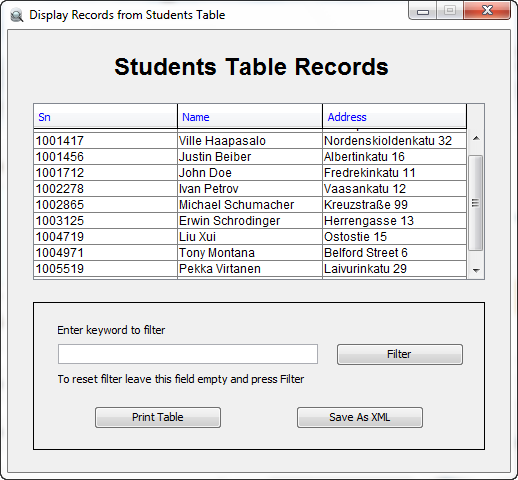
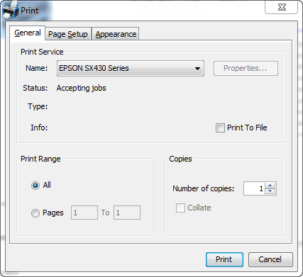
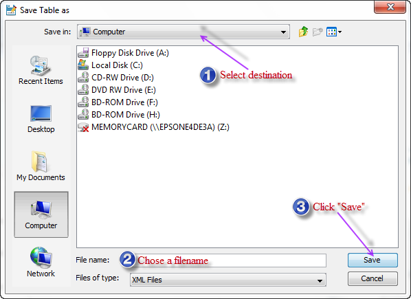

When you click on "Display Student Record" button you should see the following window:

The content of the table will be of course different according to your schema and design
By clicking on the column headers you can sort active columns according to their contents
Below the table you can find a filter panel that contains filter field, filter button, print table button and save as XML button.
You can use filter to block all unnessecary records and show only those records that satisfy your filtering criteria
Filter functionality is very handy and useful for searching operations. It allows you to find matching data without browsing through all records
In order to use the filter type a keyword and press "ENTER" or click on "Filter" button. Both ways will do.
You can print "Students" table content by clicking on "Print Table" button. When you click it you should see printing dialog window:

Set printing properties and click "Print" button to launch printing process or "Cancel" to stop printing process.
Finally you can export the whole Students table and store it in XML format by pressing "Save As XML" button. You should see the following window:
